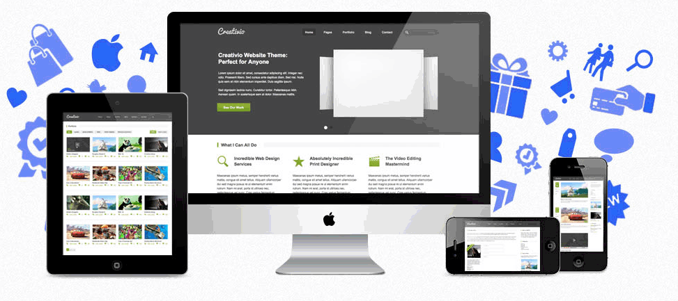

Novo Projeto
Web Designer ninja
Menu Principal
Vídeo
Forum
Compras
Demonstração

Holofote um tema wordpress criativos, para Agencias e pequenos negócios
Criativo é o tema perfeito para pessoas criativas, agências, freelancers ou pequenas empresas
Características do tema
Portfólio filtrável com Paginação
3 Widgets personalizados (Twitter, Vídeo)
Suporte para formato de publicação
Painel de opções do tema slider poderoso, como contador para itens de portfólio e blog
Wordpress 3.0+ pronto (menus e imagens em destaque)
Modelos de página (arquivos, formulário de contato, formulário de cotação, faq)
Gerador de código curto (colunas, botões, alternar, guias, alertas, títulos)
Suporte de localização total (contém arquivos .po / .mo)
HTML5 válido para suporte de código PSDs em camadas para customizar e melhorar documentação na indústria